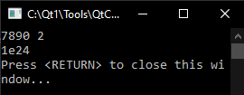

Viết chương trình dịch chuyển bit sang bên phải của một số nguyên dương nhập từ bàn phím.
Ví dụ về sự dịch chuyển bit theo chu kì sang phải:

Định dạng đầu vào:số nguyên dương 2 byte (thập lục phân) và số bit dịch chuyển (thập phân).
Định dạng đầu ra:số nhận được ở dạng thập lục phân.
Ví dụ (dòng đầu tiên là đầu vào của chuỗi nguồn, dòng thứ hai là đầu ra của kết quả).
#include <iostream> using namespace std; typedef unsigned char uchar; typedef unsigned short ushort; int main() { ushort x; int n; int i = 0; cin >> hex >> x; cin >> dec >> n; while (i < n){ x=(x>>1)|(x<<15); i++; } cout << hex << x << endl; return 0; }